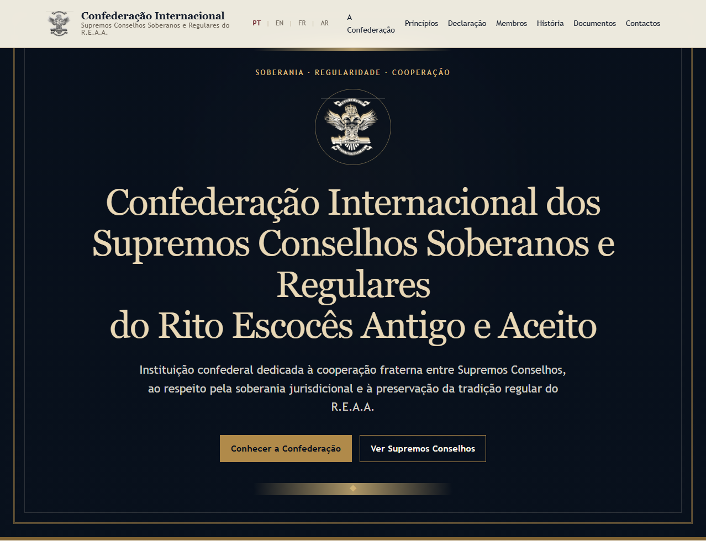
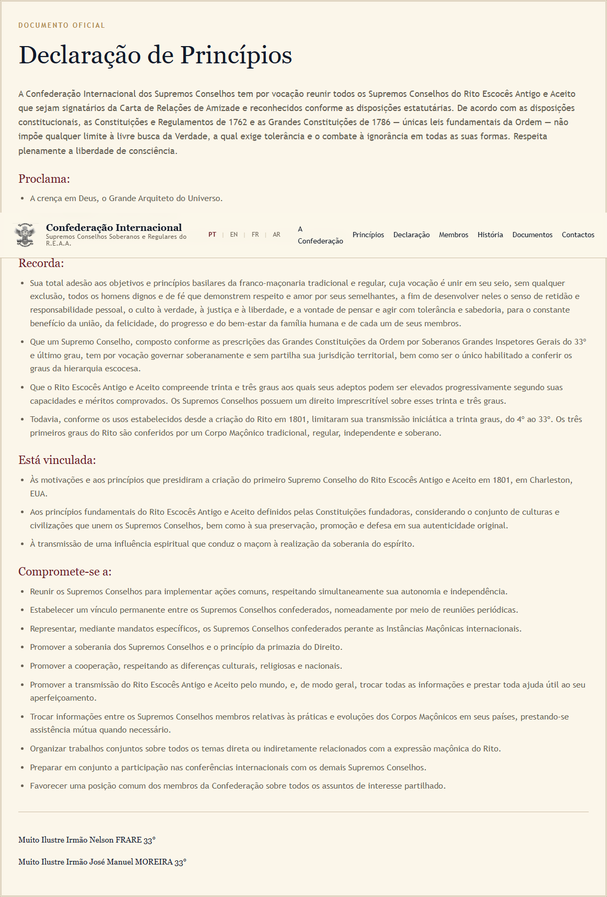
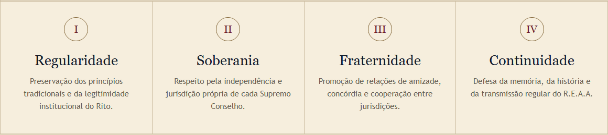
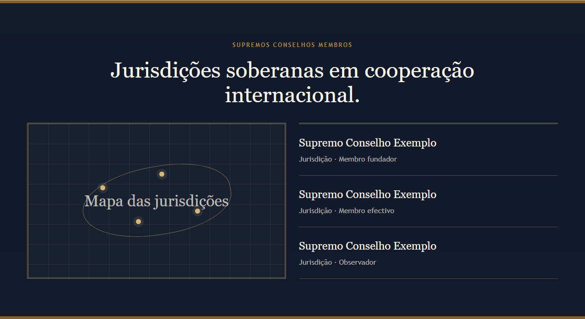
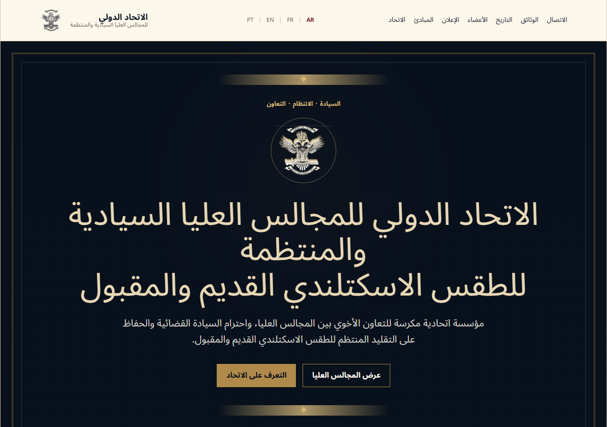
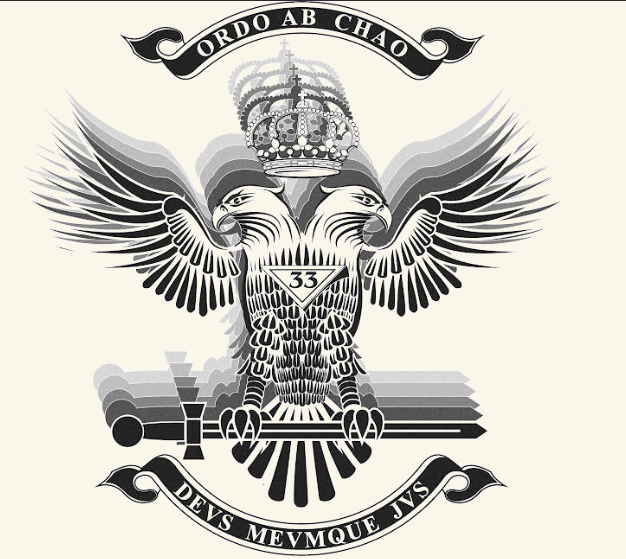
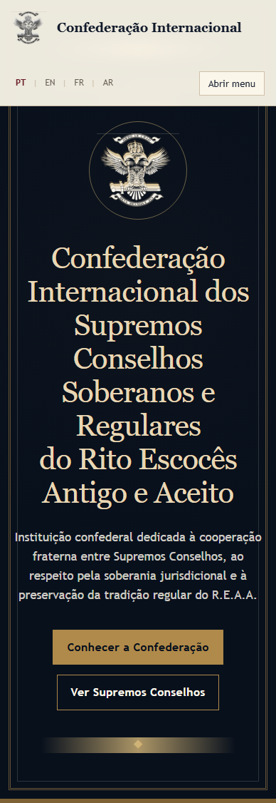

Um site que comunica continuidade, sobriedade e respeito — antes de comunicar conteúdo.
Un site qui communique la continuité, la sobriété et le respect — avant même le contenu.
Âmbito / Périmètre
Não listamos funcionalidades — explicamos por que cada escolha serve a credibilidade da Confederação. / Nous n'énumérons pas des fonctionnalités — nous expliquons pourquoi chaque choix sert la crédibilité de la Confédération.
Português
Explicamos porque cada decisão visual reforça a presença internacional
A missão da Confederação é outro orador — aqui o design fala por si
Para que cada jurisdição se reconheça numa porta digital comum e digna
Français
Nous expliquons pourquoi chaque choix visuel renforce la présence internationale
La mission de la Confédération est un autre orateur — ici le design se défend seul
Pour que chaque juridiction se reconnaisse dans une porte numérique commune et digne
Desafio / Défi de design
O site não pode parecer uma empresa, uma campanha ou uma rede social. / Le site ne peut pas ressembler à une entreprise, une campagne ou un réseau social.
Português
Evita o tom comercial que erosiona a discrição diplomática entre Supremos Conselhos
Garante peso visual ao texto constitucional — não o trata como marketing
Assegura quatro idiomas com paridade, porque a legitimidade é multilateral
Français
Évite le ton commercial qui érode la discrétion diplomatique entre Suprêmes Conseils
Garantit un poids visuel au texte constitutionnel — pas un traitement marketing
Assure quatre langues à parité, car la légitimité est multilatérale
Conceito / Concept — Institutionnel classique
Escolhemos o aspeto de documento oficial — porque a Confederação não vende, declara. / Nous avons choisi l'aspect de document officiel — parce que la Confédération ne vend pas, elle déclare.
Português
Pergaminho: evoca arquivo e tradição; o visitante sente continuidade, não uma landing page
Hero escuro: limiar solene — o nome institucional é recebido com gravidade, não como slogan
Cantos rectos, sem animação: formalidade e permanência; rejeitamos a linguagem de apps e consumo
Français
Parchemin : évoque l'archive et la tradition ; le visiteur ressent la continuité, pas une landing page
Hero sombre : seuil solennel — le nom institutionnel est accueilli avec gravité, pas comme slogan
Coins droits, sans animation : formalité et permanence ; nous rejetons le langage des apps et de la consommation
Cor / Couleur
As cores não decoram — comunicam confiança, calor institucional e gravidade. / Les couleurs ne décorent pas — elles communiquent confiance, chaleur institutionnelle et gravité.
navy-deep
navy
gold
gold-dark
parchment
paper
burgundy
Português
Pergaminho, não branco: convida à leitura longa de textos oficiais; o branco corporativo seria neutro e frio
Dourado contido: honra o Rito sem teatralidade digital
Tokens únicos: a identidade evolui num só lugar — coerência para páginas futuras
Français
Parchemin, pas blanc : invite à la lecture longue des textes officiels ; le blanc corporate serait neutre et froid
Or contenu : honore le Rite sans théâtralité numérique
Tokens uniques : l'identité évolue en un seul endroit — cohérence pour les pages futures
Tipografia / Typographie
A letra deve inspirar confiança silenciosa — não moda nem publicidade. / La lettre doit inspirer une confiance silencieuse — ni mode ni publicité.
Georgia — Confédération Internationale des Suprêmes Conseils
Trebuchet MS — Institution confédérale dédiée à la coopération fraternelle.
Noto Sans Arabic — الاتحاد الدولي للمجالس العليا
Português
Georgia nos títulos: autoridade silenciosa — como documentos impressos que já respeitamos
Trebuchet no corpo: legível sem competir com os títulos nem parecer «marketing»
Sem fontes trendy: Inter ou Poppins diriam «startup» — prejudicaria uma instituição centenária
Français
Georgia aux titres : autorité silencieuse — comme les documents imprimés que nous respectons déjà
Trebuchet au corps : lisible sans rivaliser avec les titres ni paraître « marketing »
Pas de polices trendy : Inter ou Poppins diraient « startup » — nuirait à une institution centenaire
Estrutura / Structure de la page
Uma única página — porque a Confederação precisa de um folheto soberano, não de um labirinto. / Une seule page — parce que la Confédération a besoin d'une brochure souveraine, pas d'un labyrinthe.
Português
Hero primeiro: identidade imediata — quem somos antes do que fazemos
Pilares → Declaração: orientação rápida, depois o coração jurídico com peso visual
Membros → Documentos → Contacto: alcance internacional, arquivo e canal reservado
Français
Hero d'abord : identité immédiate — qui nous sommes avant ce que nous faisons
Piliers → Déclaration : orientation rapide, puis le cœur juridique avec poids visuel
Membres → Documents → Contact : portée internationale, archives et canal réservé
Hero → Pilares → Declaração → Membros → História → Documentos → Lema → Contacto
Hero
A primeira impressão deve ser de porta institucional, não de publicidade. / La première impression doit être celle d'une porte institutionnelle, pas d'une publicité.

Português
Navy e dourado: impõem respeito sem gritar — solenidade, não espetáculo
Logo claro: honorífico sobre fundo profundo; a marca não compete com o nome
Sem vídeo nem carrossel: nada distrai do propósito institucional
Français
Navy et or : imposent le respect sans crier — solennité, pas spectacle
Logo clair : honorifique sur fond profond ; la marque ne rivalise pas avec le nom
Pas de vidéo ni carrousel : rien ne distrait du propos institutionnel
Declaração / Déclaration
O texto constitucional merece o mesmo peso que teria em papel. / Le texte constitutionnel mérite le même poids que sur papier.

Português
Texto verbatim: integridade — o site não parafraseia a lei
Bloco com borda dupla: ritual visual de documento assinado
Signatários em serif: carácter pessoal e solene da assinatura
Français
Texte verbatim : intégrité — le site ne paraphrase pas la loi
Bloc à double bordure : rituel visuel de document signé
Signataires en serif : caractère personnel et solennel de la signature
Ritmo / Rythme des sections
O olho descansa entre momentos de densidade institucional. / L'œil se repose entre les moments de densité institutionnelle.


Português
Quatro pilares: acesso rápido antes da leitura exigente da declaração
Secção escura: mudança de registo — cooperação internacional como espaço distinto
Alternância claro/quente/escuro: evita fadiga em textos longos
Français
Quatre piliers : accès rapide avant la lecture exigeante de la déclaration
Section sombre : changement de registre — coopération internationale comme espace distinct
Alternance clair/chaud/sombre : évite la fatigue sur les textes longs
Multilingue / Multilinguisme
Quatro idiomas não são um extra — são a condição de legitimidade. / Quatre langues ne sont pas un extra — ce sont la condition de la légitimité.

Português
PT · EN · FR · AR visíveis: cada jurisdição vê-se representada desde o cabeçalho
Site autónomo: fácil de manter pelos membros, sem dependência de plataformas
RTL árabe: dignidade igual — recusamos a hierarquia ocidental por defeito
Français
PT · EN · FR · AR visibles : chaque juridiction se voit représentée dès l'en-tête
Site autonome : facile à maintenir par les membres, sans dépendance de plateformes
RTL arabe : dignité égale — nous refusons la hiérarchie occidentale par défaut
Pipeline du logo
A marca deve funcionar em qualquer superfície sem perder credibilidade. / La marque doit fonctionner sur toute surface sans perdre sa crédibilité.

Português
Fundo branco original: quebrava o pergaminho — parecia colagem amadora
Variantes claro/escuro: mesma seriedade em qualquer secção do site
Processo reproduzível: pronto para o SVG final sem refazer tudo
Français
Fond blanc d'origine : cassait le parchemin — semblait un collage amateur
Variantes clair/sombre : même sérieux dans chaque section du site
Processus reproductible : prêt pour le SVG final sans tout refaire
Qualidade / Qualité
Simplicidade técnica é soberania de manutenção. / La simplicité technique est souveraineté de maintenance.
Português
Acessível e encontrável: respeito pelo visitante — delegados em viagem usam telemóvel
Site estático: sem servidores, custos ocultos ou fornecedor único
Qualquer membro pode atualizar textos sem programadores especializados
Français
Accessible et trouvable : respect du visiteur — les délégués en voyage utilisent le mobile
Site statique : pas de serveurs, coûts cachés ni fournisseur unique
Tout membre peut mettre à jour les textes sans développeurs spécialisés

Demonstração / Démonstration en direct
https://pfigueiredo.github.io/CICSR_REAA/
Convidamos a percorrer o site — e a sentir se esta presença vos representa.
Nous vous invitons à parcourir le site — et à sentir si cette présence vous représente.